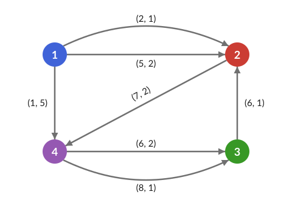
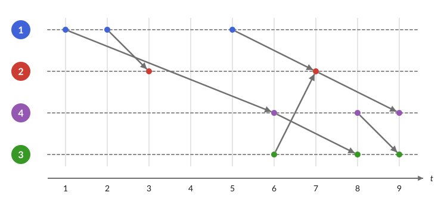

TemporalGraphs.jl

Fast temporal graph analysis in Julia.
A temporal graph extends the notion of a graph to include time, and is a natural model for messages between users, contacts between people, flights between airports, trades between accounts, and many other real-world phenomena.
There are many ways to represent temporal graphs, in this package all the graphs share that their node set is fixed. The temporal graph has the same nodes 1:n during its whole time interval, and only the edges change over time.
TemporalGraphs.jl provides a collection of algorithms and data structures for temporal graph analysis, including:
- temporal distances and optimal paths: earliest arrival, latest departure, fastest (minimum duration), shortest (minimum sum of transition times) and minimum hop paths, optionally restricted to a time window;
- temporal centralities: closeness (exact, top-k and sampled), node and edge betweenness, Katz, PageRank and walk centrality;
- global and local statistics: diameter, eccentricity, efficiency, burstiness, clustering coefficient, topological overlap, reachability,
(k, h)-cores and(L, k)-lasting cores; - connectivity, flows and spanners:
- reachability and temporal connected components;
- waiting-constrained (restless) walks and paths;
- temporal flows, cuts, disjoint paths and separators;
- temporal spanning trees and spanners;
- temporal motifs: counts of δ-temporal motifs, the 36 motifs with 3 edges or any motif;
- randomized reference models: null models of temporal networks (link, timeline, sequence and snapshot shufflings).
The package was inspired by TGLib, the C++/Python library of Lutz Oettershagen and Petra Mutzel.
Installation
The package is not registered yet. Install it from GitHub:
using Pkg
Pkg.add(url="https://github.com/aurorarossi/TemporalGraphs.jl")TemporalGraphs.jl requires Julia 1.10 or later.
Quick example
The temporal graph below has 4 nodes and 7 edges, departing at the times 1 to 8. Each edge (u, v, t, tt) leaves u at time t and reaches v at time t + tt; in the picture each arrow is labelled with its (t, tt):

The same graph with one timeline per node: each edge (u, v, t, tt) is an arrow from the timeline of u at time t to the timeline of v at time t + tt:

julia> using TemporalGraphs
julia> g = OrderedEdgeList(4, [(1, 4, 1, 5), (1, 2, 2, 1), (1, 2, 5, 2), (3, 2, 6, 1),
(4, 3, 6, 2), (2, 4, 7, 2), (4, 3, 8, 1)])
OrderedEdgeList{Int32, Int64} with 4 nodes, 7 temporal edges, time interval (1, 9)
julia> earliest_arrival_times(g, 1) # when can node 1 reach the others?
4-element Vector{Int64}:
0
3
8
6
julia> minimum_durations(g, 1) # how long do the fastest trips take?
4-element Vector{Int64}:
0
1
7
4
julia> minimum_duration_path(g, 1, 4) # and which edges do they use?
2-element Vector{TemporalEdge{Int32, Int64}}:
(1 2 5 2)
(2 4 7 2)
julia> temporal_closeness(g, Fastest())
4-element Vector{Float64}:
1.3928571428571428
0.5
1.3333333333333333
1.0Head to Getting started for a tour of the package.